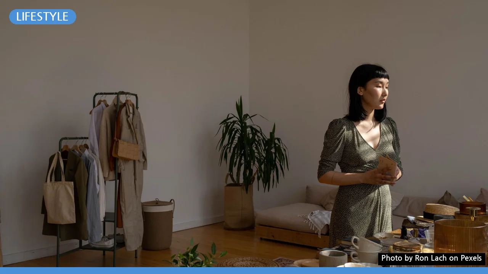
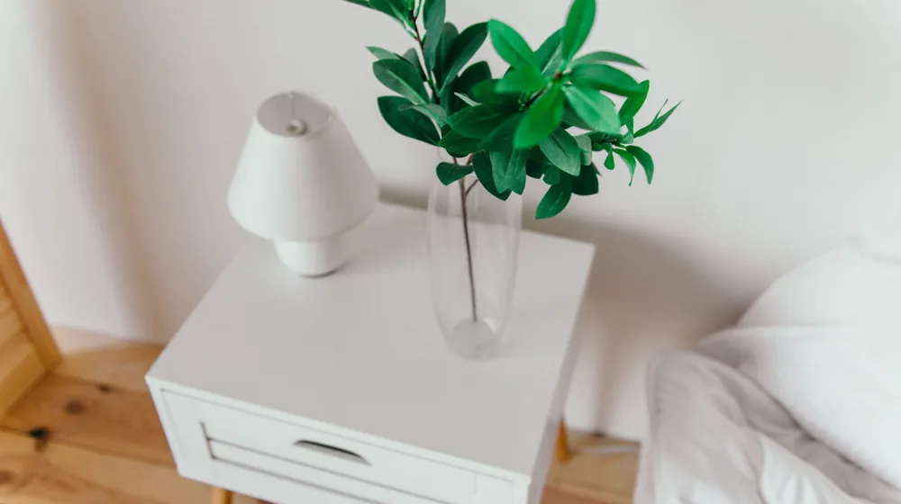

나에게 맞는 미니멀 라이프? 3가지 유형 비교하고 시작하는 법
사진: Ron Lach / Pexels (무료 이미지, 출처 표기)
미니멀 라이프, 왜 다르게 시작해야 할까?

물건을 비우고 단순하게 사는 삶, 미니멀 라이프에 대한 관심이 높아지고 있습니다. 하지만 막상 시작하려 하면 '어디서부터 어떻게 해야 할까' 막막하게 느껴질 때가 많습니다. 미니멀 라이프는 정답이 있는 것이 아니라, 각자의 가치관과 생활 방식에 따라 다양한 형태로 나타나기 때문입니다.
내게 맞지 않는 방식으로 억지로 실천한다면 오히려 스트레스를 받을 수 있습니다. 따라서 자신에게 가장 적합한 미니멀 라이프의 방향을 먼저 설정하는 것이 성공적인 시작의 열쇠가 됩니다. 지금부터 대표적인 미니멀 라이프 유형들을 살펴보고, 나에게 맞는 길을 찾아보세요.
대표적인 미니멀 라이프 유형 3가지 비교
미니멀 라이프는 단 하나의 형태만 있는 것이 아닙니다. 일반적으로 추구하는 목표와 방법에 따라 크게 세 가지 유형으로 나눌 수 있습니다. 각 유형의 특징을 비교하여 나에게 어떤 방식이 더 끌리는지 확인해 보세요.
이 외에도 다양한 유형이 존재하지만, 이 세 가지는 미니멀 라이프를 이해하는 데 좋은 출발점이 됩니다. 자신에게 가장 매력적으로 다가오는 유형을 찾아보는 것이 중요합니다.
나에게 맞는 미니멀 라이프 유형 고르는 체크리스트
앞서 살펴본 유형들을 바탕으로, 나에게 맞는 미니멀 라이프를 선택하기 위한 몇 가지 질문을 스스로에게 던져보세요. 이 질문들은 여러분의 라이프스타일과 가치관을 이해하는 데 도움을 줄 것입니다.
- 나는 현재 어떤 라이프스타일을 가지고 있는가? (1인 가구, 가족, 직장인, 학생 등)
- 미니멀 라이프를 통해 얻고 싶은 가장 큰 변화는 무엇인가? (경제적 여유, 정신적 안정, 깔끔한 집, 환경 보호 등)
- 나는 물건에 대해 어떤 가치를 부여하는가? (추억, 실용성, 디자인, 유용성 등)
- 지금 당장 포기하기 가장 어려운 물건은 무엇인가? (취미 용품, 특정 의류, 추억의 물건 등)
- 내 주변 사람들은 나의 미니멀 라이프 실천에 대해 어떻게 생각할까? (가족의 동의 여부 등)
- 물건을 비우는 과정에서 스트레스를 얼마나 감당할 수 있는가?
이 질문들에 대한 답을 통해 내가 추구하는 미니멀 라이프의 윤곽이 더욱 명확해질 것입니다. 예를 들어, 돈을 절약하고 싶다면 '실용적 미니멀리즘'에 가깝고, 예술적인 공간을 원한다면 '심미적 미니멀리즘'이 더 적합할 수 있습니다.
미니멀 라이프, 이렇게 시작하면 성공합니다
자신에게 맞는 유형을 선택했다면, 이제는 구체적인 실천 단계로 나아갈 차례입니다. 2026년 10월 기준으로, 다음과 같은 방법들을 활용하면 미니멀 라이프를 성공적으로 시작할 수 있습니다.
- 명확한 목표 설정: '왜 미니멀 라이프를 하는가?'에 대한 답을 명확히 합니다. 목표가 명확해야 어려움에 부딪혔을 때 흔들리지 않고 지속할 수 있습니다.
- 작은 공간부터 시작: 서랍 하나, 책상 위, 화장대 등 작은 공간부터 비우기 시작하세요. 작은 성공 경험이 다음 단계로 나아갈 원동력이 됩니다.
- 정리 원칙 정하기: '1년 동안 사용하지 않은 것은 버리기', '새로운 물건을 사면 하나 버리기(원인-결과 정리법)' 등 자신만의 원칙을 세웁니다.
- 물건에 질문하기: 물건을 볼 때마다 '이것이 나에게 정말 필요한가?', '이것이 나의 삶을 더 풍요롭게 하는가?'라고 질문해 보세요.
- 소비 습관 점검: 물건을 비우는 것만큼 중요한 것은 새로운 물건이 들어오는 것을 통제하는 것입니다. 충동구매를 줄이고, 정말 필요한 것만 구매하는 습관을 들입니다.
- 기록하고 점검하기: 미니멀 라이프는 꾸준히 개선해나가는 과정입니다. 어떤 물건을 버렸는지, 어떤 변화가 있었는지 기록하고 주기적으로 점검하며 동기 부여를 유지하세요.
미니멀 라이프 실천 시 주의할 점
미니멀 라이프는 긍정적인 변화를 가져다주지만, 몇 가지 주의할 점도 있습니다. 다음 사항들을 유념하여 건강하고 지속 가능한 미니멀 라이프를 이어가세요.
- 극단적인 비교 피하기: 다른 사람의 미니멀 라이프와 자신을 비교하며 스트레스받지 마세요. 각자의 삶의 방식과 목표가 다르므로, 자신만의 속도와 기준으로 나아가는 것이 중요합니다.
- 강박적인 비움 경계: '무조건 버려야 한다'는 강박에 사로잡혀 꼭 필요한 물건이나 소중한 추억이 담긴 물건까지 버리는 실수를 하지 않도록 주의합니다.
- 새로운 소비로 이어지지 않게: 물건을 비운 공간을 다시 새로운 미니멀리스트 아이템으로 채우려는 '미니멀 소비'에 빠지지 않도록 합니다. 본질적인 목적은 물건의 수가 아니라 '나의 삶'에 집중하는 것입니다.
- 가족과의 소통: 혼자가 아닌 가족과 함께 사는 경우, 미니멀 라이프에 대한 충분한 소통과 동의가 필수입니다. 일방적인 정리는 갈등을 유발할 수 있습니다.
미니멀 라이프는 단순히 물건을 줄이는 행위를 넘어, 자신의 가치관을 돌아보고 삶의 우선순위를 재정립하는 여정입니다. 조급해하지 않고 천천히 자신에게 맞는 속도로 나아가며, 진정한 만족을 찾아가시길 바랍니다.
🔗 이 글도 함께 보면 좋아요: 전통주 선물세트, 실패 없이 고르는 법: 후기부터 주의사항까지 완벽 정리